复仇与回忆 · 正式战役 actual · 2026-11-01
战斗回溯与海峡城修正
第1—6项已接入本地源码；第7项已核实：当前正式战役没有强盗等团体重新占据已攻略地点的系统。未打包、安装或更新 iPhone。下方图片均可展开查看，修改后画面为后台引擎渲染，不是真机截图。
回溯规则
战斗菜单第二项为“回溯到上回合（剩余N次）”。确认后，从当前第N回合回到第N−1回合我方刚开始、尚未行动的起点；撤销上一回合和本回合在该起点之后发生的变化。每次开战最多2次，读档保留已用次数；整场重试会重置整场战斗并重新计次。第1回合无法使用。
恢复内容包括生命、站位、行动标记、经验与成长、装备与行囊、掉落与击杀、任务机关、劳工/护送与增援、临时技能和掩护、随机数。阶段恢复和预警不重复结算；回到第1回合不重播开战长对白。保存失败会回滚此次回溯，不消耗次数。
旧版本中途存档只保留了真实的开战快照，无法凭空还原未记录的上一回合。旧第2回合可回到开战起点；更晚的旧记录需先记录新的完整回合，之后才可回溯到相邻回合。重试或新开战斗从第1回合完整记录。
任务提示为何落后一关
日记中两个硬编码名称与关卡编号不一致：104本应是“旧塔外营”，却写成“骑兵营”；105是位于世界地点“海峡城”的“海峡旧塔堡”，却仍写成“旧塔外营”。世界道路解锁使用的通关编号正确。因此这次修正日记文案：M14后指向“海峡城内的旧塔堡，救出劳工，截断科兰的退路”，保留正确的道路推进。
海峡城敌军配置
保留15名初始敌军、2名原定第4敌方阶段增援。科兰改为5级壁垒卫士；M15_e1士兵替换为5级真正的重装兵；原三名“重装兵”的职业实际是大骑士，现全部改为4级骑士。其余士兵、弓手（含2名士兵增援）升5级，每人合计3点成长，在生命、力量、技巧、速度、物防、魔防间随机分配并固定，不改幸运、移动与射程，不因读档重新抽取。
本表列基础数值。科兰保留钢枪，因此基础力量16、速度3在状态页计入装备后显示攻击20、速度2；物防11、魔防5。职业变更同步采用壁垒卫士/重装兵4移动、骑士8移动。
查看3点成长分配
旧战斗按已知旧值逐项迁移，不叠加成长。保留缺失生命、已击倒敌人、站位、回合、任务和随机数；重试快照及回溯快照同步升级。预设增援在生成时也采用新值。
为何没遇到强盗抢占地图
旧引擎保留世界军队实例、移动和生成相关代码，但正式战役初始化会清空世界军队，战斗入口只识别未通关的正式关卡，没有接入“清关地点被强盗重新占据”的生成和遭遇流程。设计说明也明确记录“actual当前没有原版式世界游荡敌军系统”。所以不是概率低或漏触发，而是这项玩法尚未接入正式战役。
当前可用的成长补充是部队整备 → 战术补练：第一章打完南岗押送所（M13）后开放；每章每队最多成功2次，每位实际参训者成功获得60经验。失败、退出不扣成功次数；两种模式为突破/护阵。它不是强盗占图，本轮也没有擅自新增随机占图机制。
运行画面
菜单入口 · 修改前后
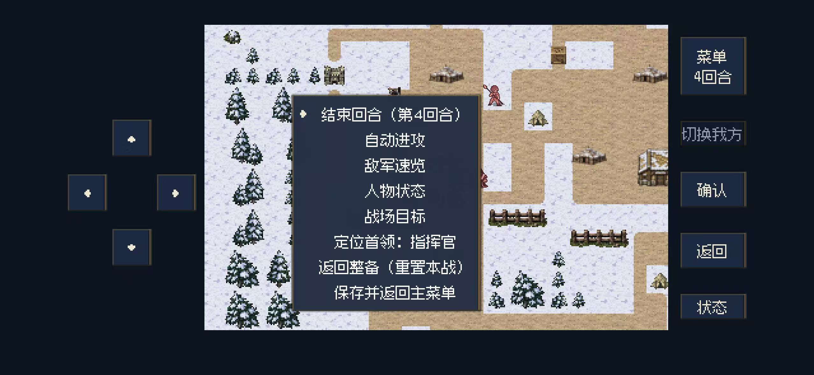
修改前 · 用户提供截图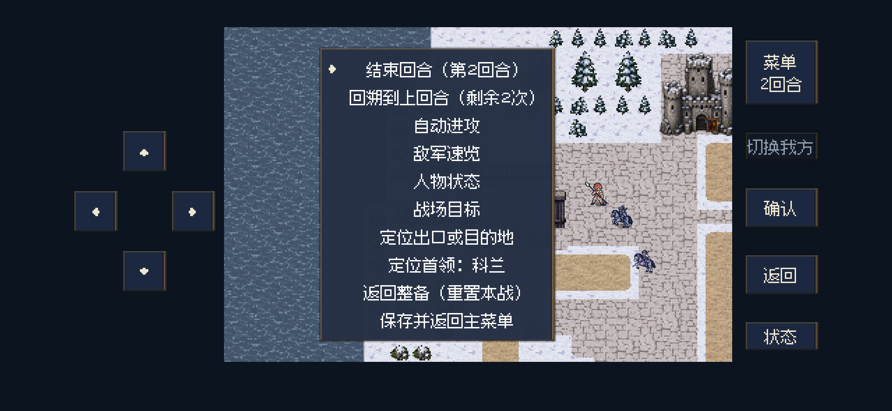
修改后 · Godot后台手机布局任务日记 · 修改前后
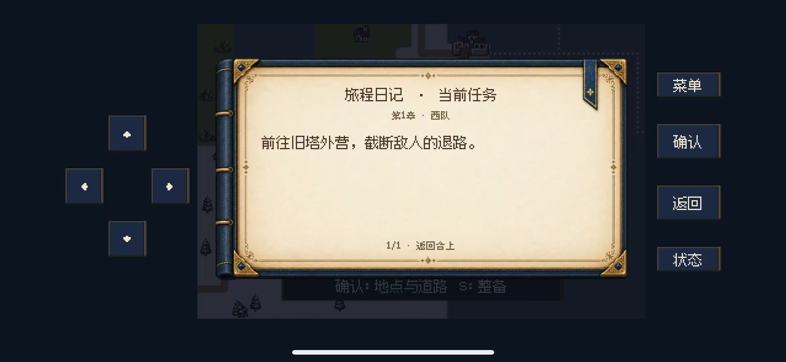
修改前 · 用户提供截图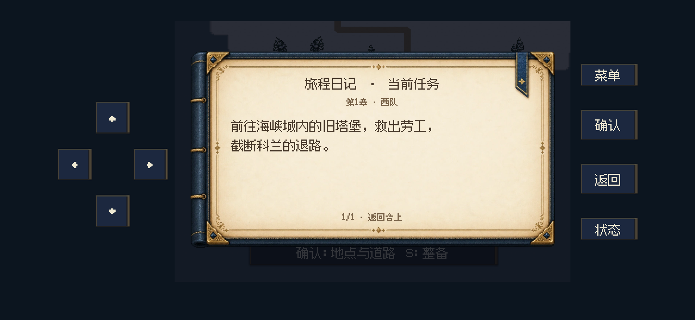
修改后 · Godot后台手机布局科兰 · 修改前后
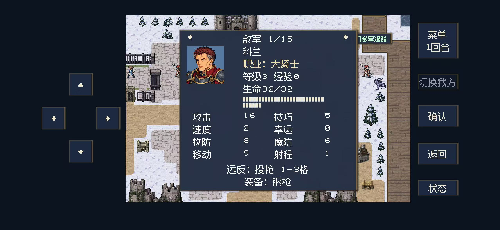
修改前 · 用户提供截图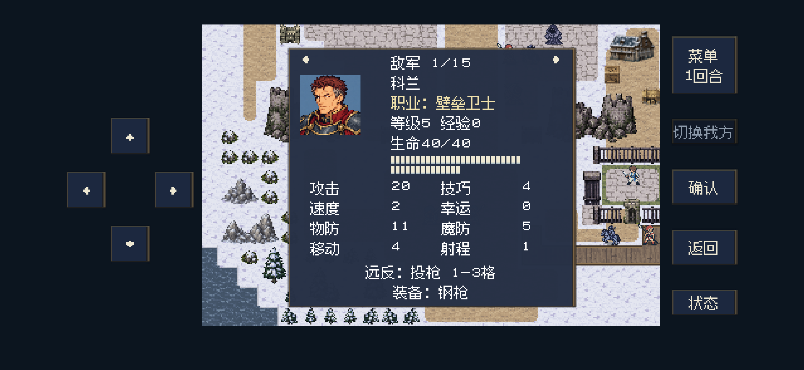
修改后 · Godot后台手机布局替换士兵 · 修改前后
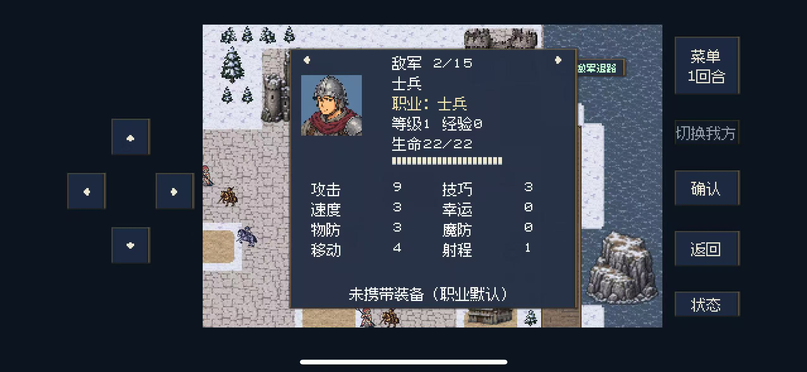
修改前 · 用户提供截图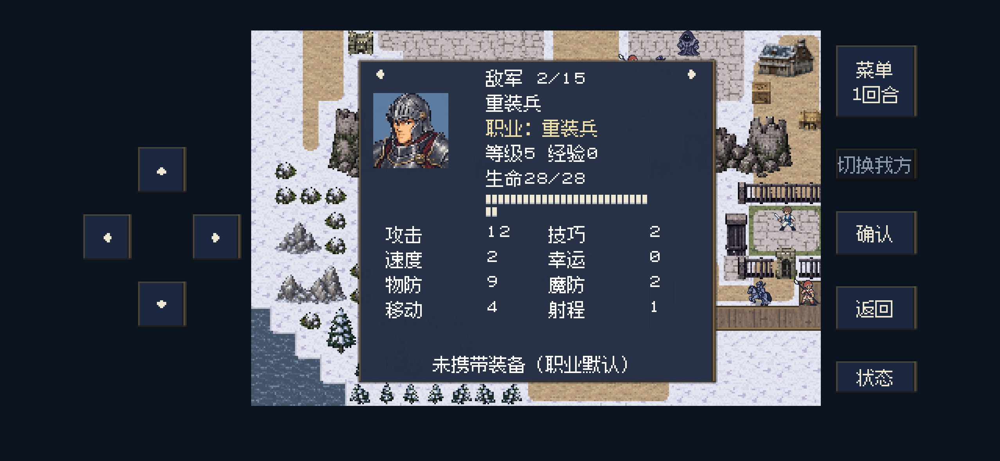
修改后 · Godot后台手机布局修正骑士 · 修改前后
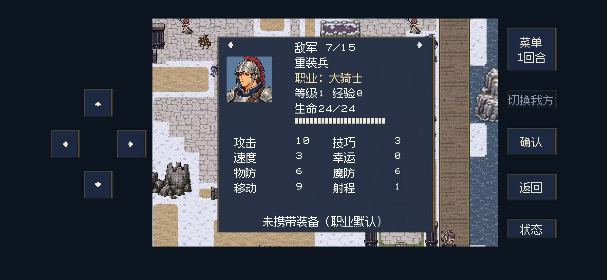
修改前 · 用户提供截图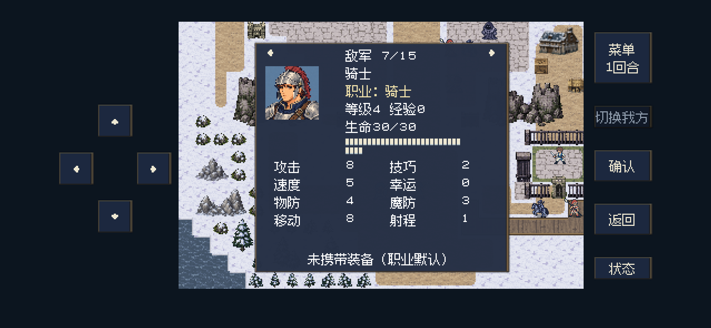
修改后 · Godot后台手机布局回溯确认
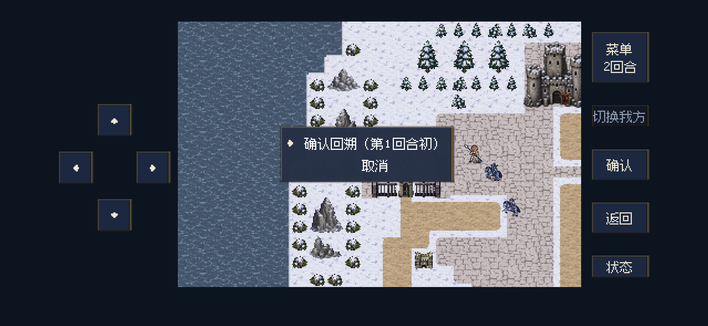
完成回溯
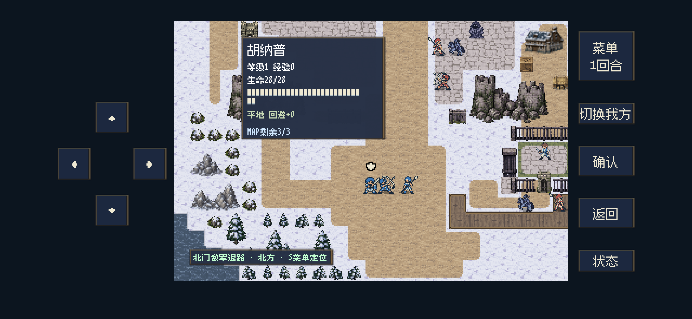
5级弓手
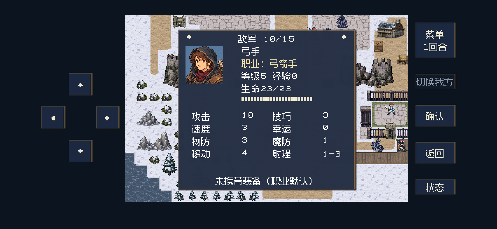
补练入口
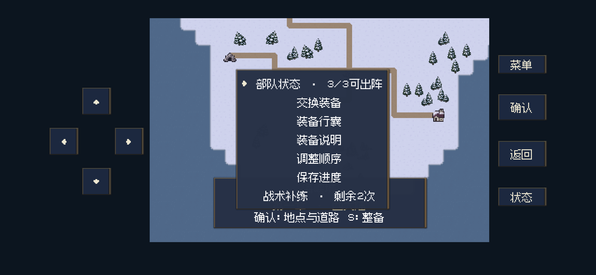
较窄布局菜单
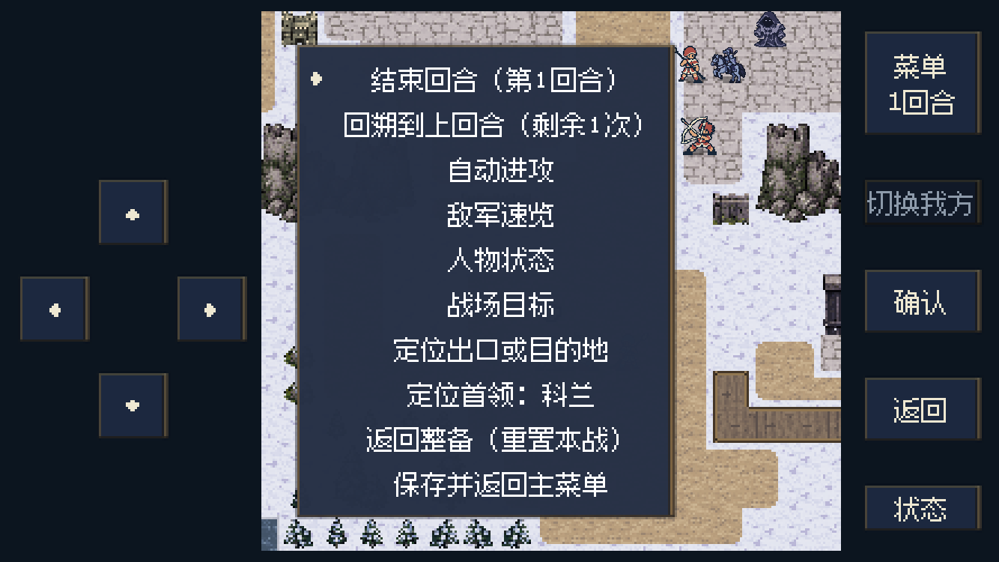
较窄布局状态
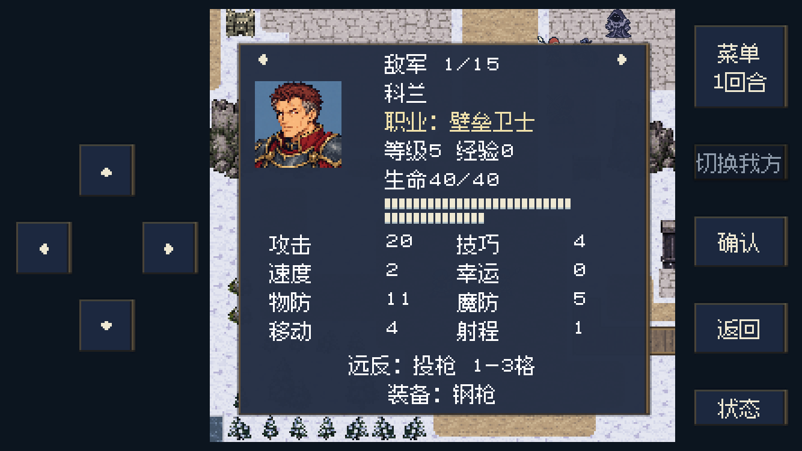
验证范围
最终定向无窗口检查110项、后台图形/布局检查122项通过；既有存档检查241项、补练检查303项通过。定向检查覆盖真实交锋撤销、两次上限、连续回溯、读档、保存失败、损坏快照拒绝、旧数值迁移、增援生成，以及第二至第五章代表关卡（F22、M32、F43、J54）的快照恢复。后台画面覆盖2556×1179及1334×750，包含文字与位图边框安全区校验。
未执行全战役重新通关、真人难度试玩或真机安装。数值变化与回溯不代表海峡城已完成人工难度验收。
定向逻辑记录 · 后台截图/布局记录 · 逐项数值与成长记录 · 补练回归 · 图片规格与体积
实现：battle_rewind.gd · current_task.gd · M15.json · 完整游戏设定